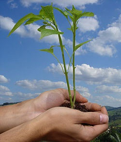
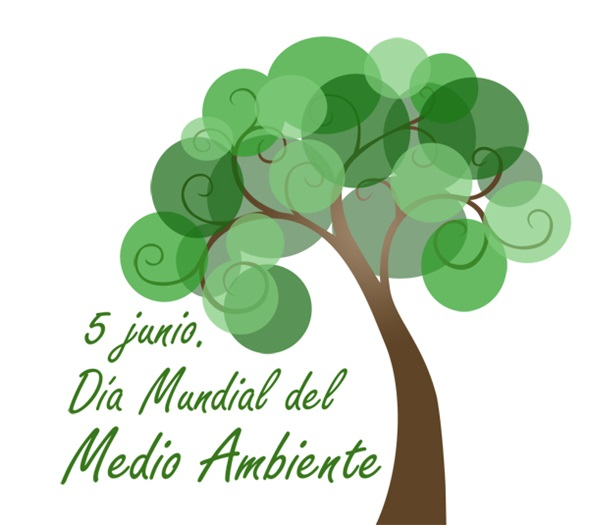

El día Mundial del Medio Ambiente es un vínculo por medio del cual la Organización de Naciones Unidas (ONU) sensibiliza a la población mundial en relación a temas ambientales, intensificando la atención y la acción política. Los objetivos principales son brindar un contexto humano, motivar a las personas para que se conviertan en agentes activos del desarrollo sustentable y equitativo; promover el papel fundamental de las comunidades en el cambio de actitud hacia temas ambientales, y fomentar la cooperación para que el medio ambiente sea sostenible, pues ésta garantizará que todas las naciones y personas disfruten de un futuro más próspero y seguro.

El Día Mundial del Medio Ambiente es un evento en el que se realizan múltiples actividades: concentraciones en calles, conciertos ecológicos, ensayos y competencias de afiches en escuelas y colegios, plantaciones de árboles, campañas de reciclaje y de limpieza, entre otras. Es además, un suceso multimedial que lleva a periodistas a escribir y hacer reportajes críticos acerca del ambiente, así como documentales televisivos, exhibiciones fotográficas, eventos intelectuales como seminarios, mesas redondas, conferencias, sólo por nombrar algunos.
En muchos países esta celebración es una oportunidad de firmar o ratificar convenios internacionales y, algunas veces, establece estructuras gubernamentales permanentes relacionadas con el manejo ambiental y la planificación económica.
